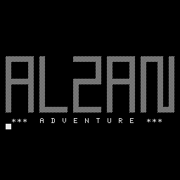

2bc0 57cd 0000 B ...
ALZAN Piept am Anfang 90 mal bevor es losgeht.
+++ WILLKOMMEN IN ALZAN +++
SIE MUESSEN DIE MAUERN UEBERWIN-
DEN, UM AUS DIESER STADT VON
DIEBEN UND HALSABSCHNEIDERN ZU
E N T K O M M E N !!
SIE SIND IN DER HAUPTSTRASSE
VOR EINEM KURZWARENLADEN. DIE
HAUPTSTRASSE VERLAEUFT IN OST-
WEST-RICHTUNG. EINE KLEINE
GASSE FUEHRT NEBEN DEM LADEN
NACH NORDEN.
Was machen Sie nun ?
H E L P - M E N U E
___________________
Hinein Stelle NORD
Hinaus Baue WEST
Hinunter Zuende SUED
Rein Habe OST
Raus Kaufe
Durch Klaue
Hoch Raube
Hinueber Schaffe
Nehme Trage
Werfe Aufheben
Lege
Bastle